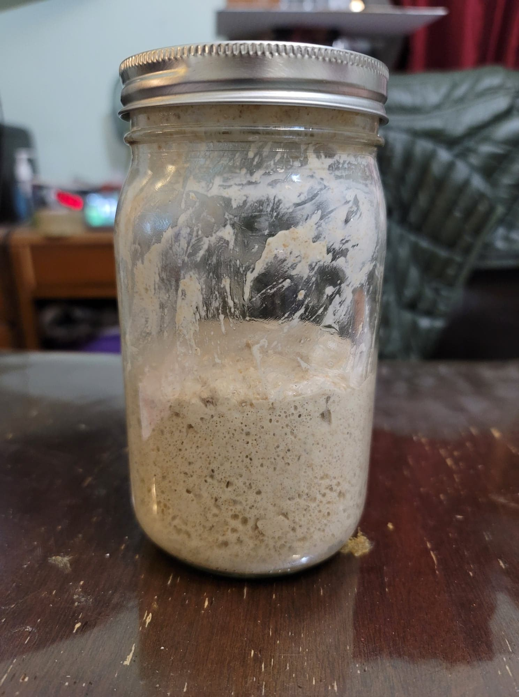

Sourdough Starter

Ingredients:
- Water, nonchlorinated
- Rye flour
- Unbleached AP flour
Instructions:
- Into a 1 quart, loosely lidded jar, combine the flour and water as specified every day for at least 7 days to start the sourdough starter. From then onwards, continue to feed the starter for as long as you wish for it to be active.
- Day 1:
- 100g Rye flour
- 150g Water, 85 degrees Fahrenheit
- Day 2:
- 70g Yesterday's starter
- 50g Rye flour
- 50g Unbleached AP flour
- 115g Water, 85 degrees Fahrenheit
- Day 3:
- 70g Yesterday's starter
- 50g Rye flour
- 50g Unbleached AP flour
- 115g Water, 85 degrees Fahrenheit
- Day 4:
- 70g Yesterday's starter
- 50g Rye flour
- 50g Unbleached AP flour
- 100g Water, 85 degrees Fahrenheit
- Day 5:
- 70g Yesterday's starter
- 50g Rye flour
- 50g Unbleached AP flour
- 100g Water, 85 degrees Fahrenheit
- Day 6:
- 50g Yesterday's starter
- 50g Rye flour
- 50g Unbleached AP flour
- 100g Water, 85 degrees Fahrenheit
- Day 7:
- 25g Yesterday's starter
- 50g Rye flour
- 50g Unbleached AP flour
- 100g Water, room temperature
- From day 7 onwards, repeat day 7's feedings. Feed daily. If wanting to take a break from feedings, refrigerate and switch to feeding weekly.